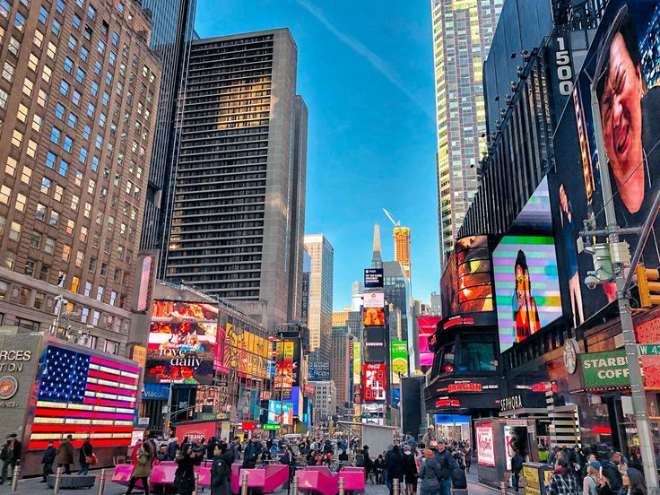
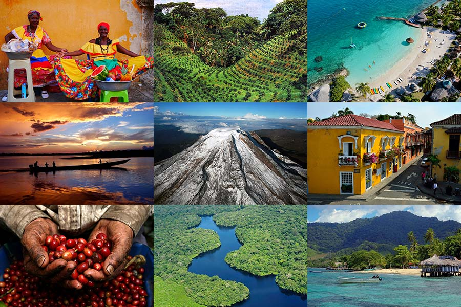
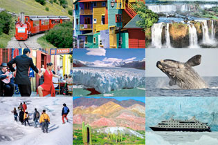

Corea
Conocida por su rica cultura y tecnología de vanguardia, es una península en el este de Asia. Ofrece una mezcla fascinante de tradiciones antiguas y una sociedad moderna y dinámica, famosa por su gastronomía, K-pop y paisajes impresionantes.

Japón
Conocido por su rica cultura histórica y tecnología avanzada, es una nación insular en el este de Asia. Ofrece una mezcla única de tradición y modernidad, con impresionantes paisajes naturales, templos antiguos y ciudades ultramodernas como Tokio. Su gastronomía, que incluye sushi y ramen, es mundialmente famosa.

Estados Unidos
Conocido por su diversidad geográfica y cultural, es una nación poderosa en América del Norte. Destaca por su influencia global, monumentos icónicos como la Estatua de la Libertad y una mezcla única de paisajes que van desde playas soleadas hasta majestuosas montañas.
Colombia
Situada en América del Sur, es conocida por su rica diversidad geográfica, que incluye playas caribeñas, selvas tropicales y montañas imponentes. Este país vibrante ofrece una cultura colorida, una historia fascinante y una gastronomía variada, siendo hogar de personas amables y apasionadas.
Argentina
Ubicada en América del Sur, es conocida por su diversidad geográfica, desde los picos de los Andes hasta las vastas llanuras de la Pampa. Ofrece una rica cultura, famosa por el tango y la deliciosa carne asada. Buenos Aires, su capital, es un centro de arte y vida nocturna, mientras que la Patagonia impresiona con sus paisajes naturales majestuosos y glaciares.
